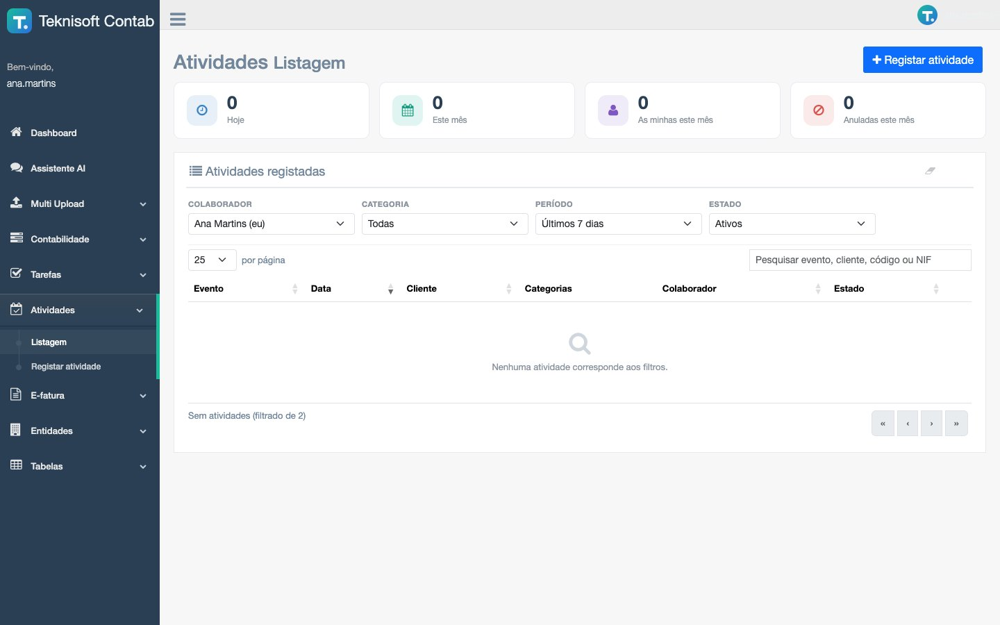
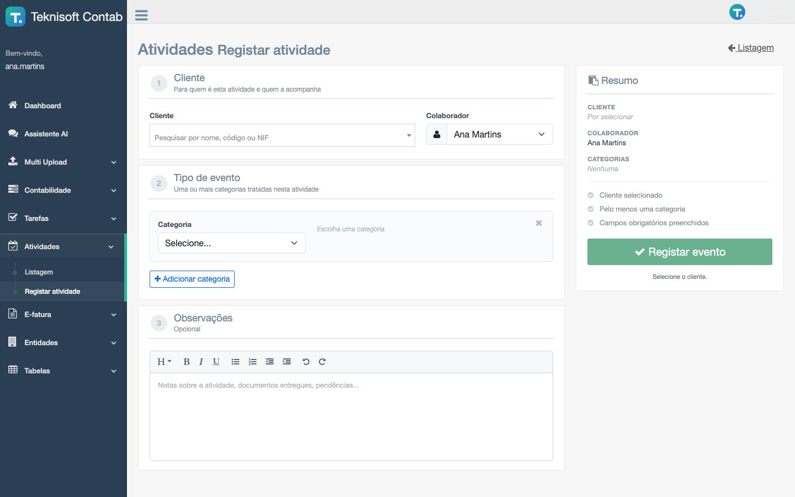
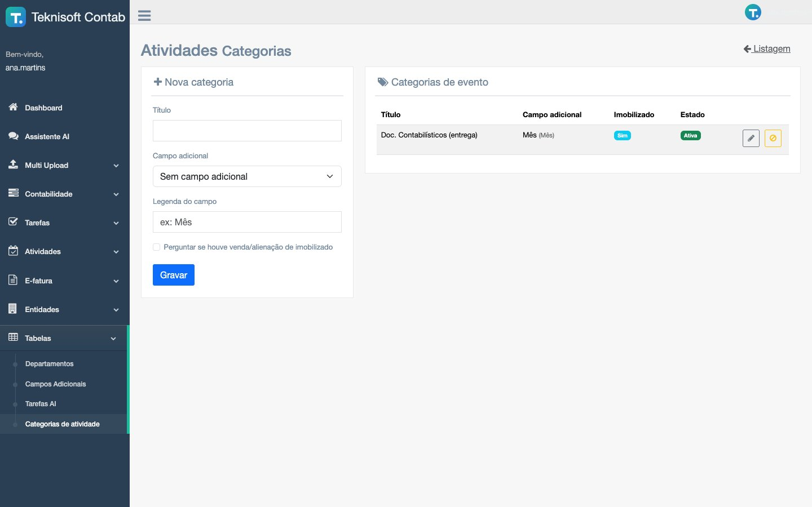

Atividades, agenda e equipa
Ferramentas do dia a dia do gabinete: registar o trabalho feito por cliente, marcar reuniões e prazos, falar com a equipa e registar a assiduidade.
Atividades
Atividades > Listagem e Registar atividade. Registo do trabalho feito para cada cliente: atendimentos, entregas de documentos, reuniões, pendências.


- Cliente: pesquise por nome, código ERP ou NIF.
- Colaborador: por omissão, você.
- Tipo de evento: uma ou mais categorias (definidas em Tabelas > Categorias de atividade), cada uma com os seus campos.
- Observações: texto formatado (documentos entregues, pendências...).
- Registar evento fica ativo quando os campos obrigatórios estão completos.
Uma atividade pode ser anulada (fica no histórico com o estado "Anulada").

Agenda (calendário)
No Dashboard. Vistas Mês, Semana, Dia e Lista.
- Criar: clique num dia ou horário (toque longo no telemóvel) ou Novo evento. Arraste para mudar a hora.
- Campos: título, cliente (opcional, com ligação à ficha), início e fim, dia inteiro, local, lembrete (15 min a 1 dia), convidados e observações.
- Quem vê: o criador e os convidados; administradores podem convidar "Todos os utilizadores".
- Avisos: convite, alteração de hora e lembrete chegam na página aberta, por notificação push (app instalada ou browser, mesmo fechados) e no calendário do telemóvel.
- No telemóvel: Ver no telemóvel mostra como subscrever a agenda por CalDAV (iPhone, Android, Outlook, Thunderbird). Os eventos aparecem com o nome da app, com lembretes.
Chat interno
Ativa-se em Definições > Geral > Chat interno. Oferece um canal público e grupos, presença (quem está online) e notificações. Pode aparecer como item de menu ou como janela flutuante em todas as páginas.
Assiduidade (registo de ponto)
Ativa-se em Definições > Módulos > Assiduidade. Acrescenta o menu Assiduidade e um relógio de ponto no topo de todas as páginas.
| Ecrã | Quem | Para quê |
|---|---|---|
| Registo de Ponto | Todos | Picar entradas e saídas (manhã e tarde) e ver o mapa mensal próprio. Atrasos para além da tolerância pedem justificação. |
| Ausências e Férias | Todos | Pedir férias, faltas, formação, etc. (dia inteiro, manhã ou tarde) e ver o saldo de férias. Gestores aprovam ou recusam. |
| Mapa de Ausências | Gestores (ou todos, se público) | Visão de equipa do mês: quem está ausente e porquê. |
| Configuração | Administradores | Horários (vários, por dia da semana, contínuos ou com intervalo), tipos de ausência, feriados municipais e encerramentos, dias de férias por colaborador. |
Os feriados nacionais são calculados automaticamente (incluindo a Páscoa e, opcionalmente, o Carnaval). Correções feitas por um gestor ficam assinaladas no mapa.